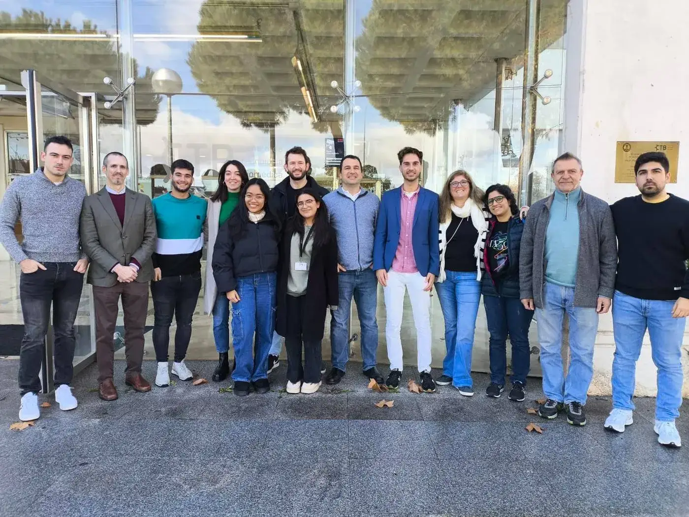
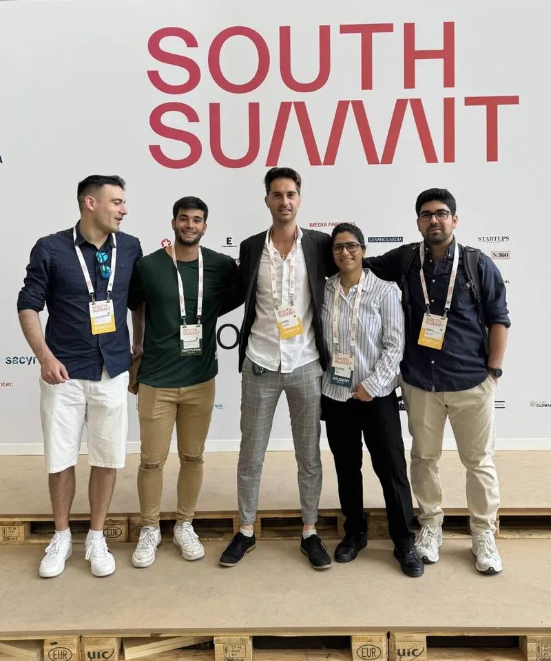

Salud
Integración de sistemas de salud con el estándar FHIR y plataformas para el seguimiento de la fragilidad.
- Integración con FHIRsin integraciones a medida
- eCare4 perfiles · 4 idiomas
- Integracam3 hospitales · 2 interfaces
Te acercamos al futuro
Tecnología para salud e innovación, con tus datos bajo tu control. Para organizaciones donde la tecnología y la innovación importan.
Hablemos de tu proyecto +
+Asistentes, agentes y automatizaciones que funcionan en tu propia infraestructura, con tus datos bajo control.
 +
+Limpiamos y analizamos tus datos con IA y creamos modelos de IA para la toma de decisiones de tu equipo.
 +
+Plataformas web, apps móviles y backend para tu negocio, del primer prototipo a producción.
 +
+Dispositivos conectados, sensores y prototipos, con el software que los une.
 +
+Diseñamos y evaluamos interfaces pensadas para personas mayores, con usabilidad y accesibilidad probadas.
 +
+Apoyo técnico para definir, diseñar y prototipar proyectos de innovación tecnológica y de IA.
IA que trabaja dentro de tu organización, con los datos bajo tu control.
Convierte voz en texto con IA sin que el audio ni el texto salgan de tu entorno.
Saber más › 02Un asistente que no solo responde: usa herramientas para consultar tus sistemas y ejecutar acciones.
Saber más › 03 · PróximamenteUn agente que asume tareas de un puesto de trabajo, con los datos siempre dentro de tu organización.
Saber más ›Cifras medidas en estudios y despliegues. Cada una lleva a su caso.
Nuestra base está en la tecnología biomédica. Estos son los sectores donde ya hemos entregado proyectos.
Integración de sistemas de salud con el estándar FHIR y plataformas para el seguimiento de la fragilidad.
Interfaces, comunicación y ejercicios pensados para personas mayores, con la adherencia como objetivo.
Dispositivos de medida y plataformas de gestión para tecnología médica.
Plataformas para servicios públicos de prevención, apoyadas en evidencia científica.
Software para proyectos de investigación, incluido un proyecto europeo.
Software, hardware y plataformas diseñados desde cero para el problema de cada organización.
Compañías tecnológicas y de ingeniería, y también instituciones académicas y biomédicas.


Avanzas paso a paso y solo sigues si tiene sentido para tu negocio.
Analizamos necesidades, datos, requisitos y opciones técnicas.
Construimos una primera solución real y la probamos con tu equipo.
Mantenemos, mejoramos y ampliamos lo que funciona.


Venimos de la investigación aplicada y trabajamos con rigor científico.
Diseñamos las soluciones para que la información sensible no salga de tu organización.
Un equipo pequeño que te atiende de principio a fin, sin intermediarios.
Cuéntanos qué necesitas y te decimos honestamente si podemos ayudarte.